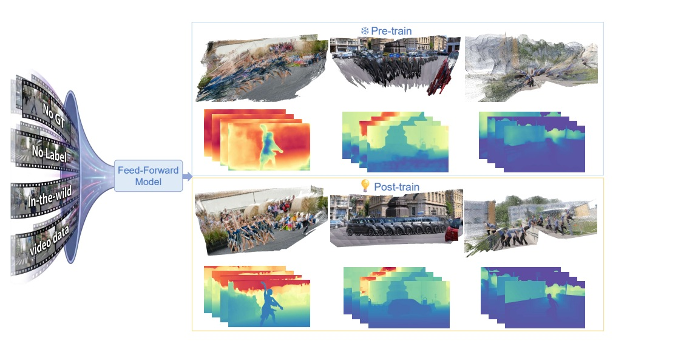
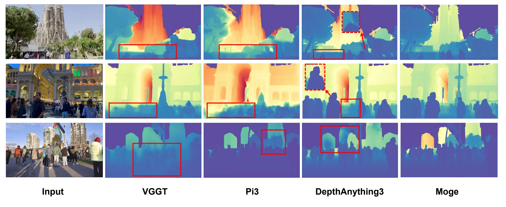
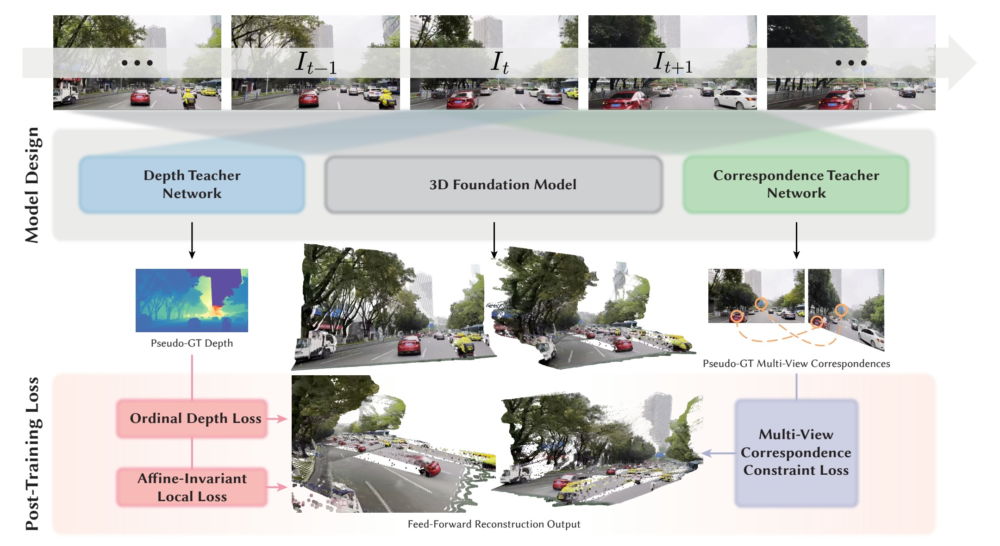
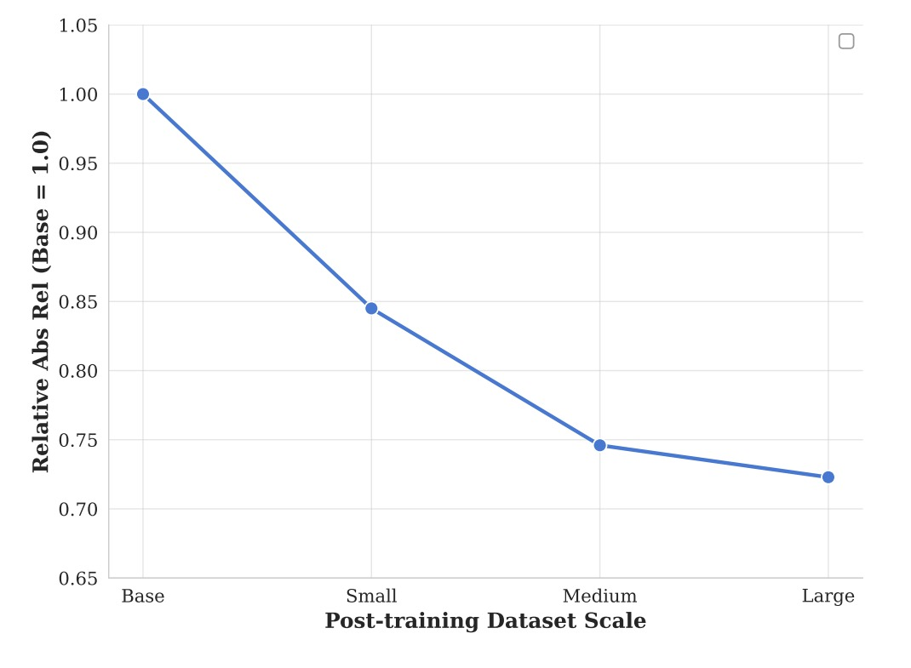
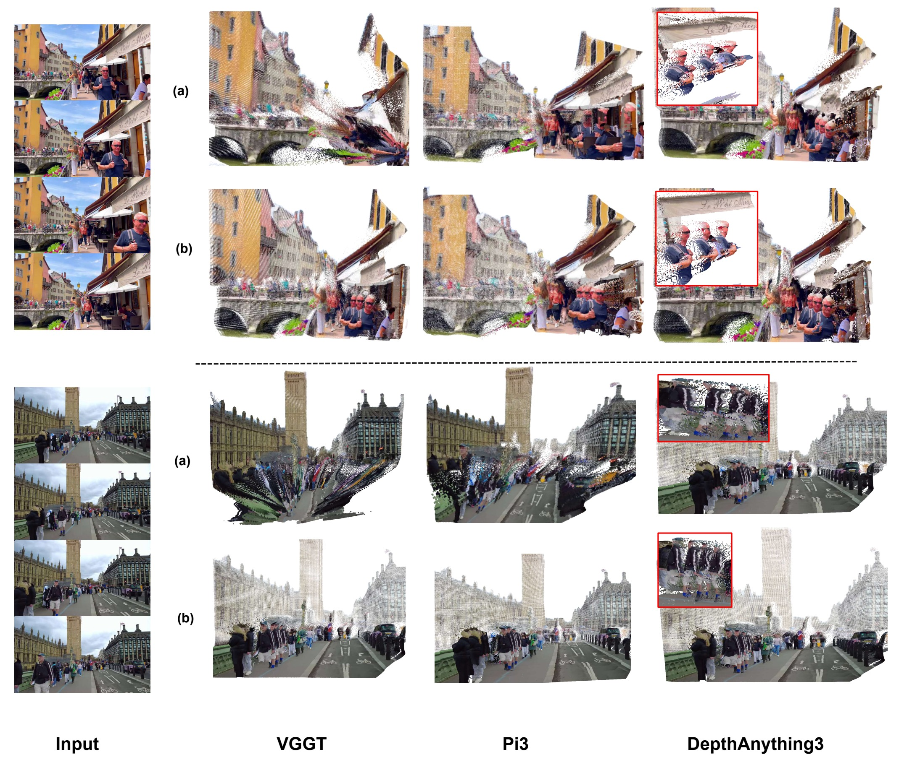

PURE: Refining Feed-forward 3D Reconstruction
with Unlabeled Post-training
An annotation-free post-training paradigm that unlocks feed-forward 3D reconstruction on in-the-wild dynamic videos.

Abstract
Feed-forward 3D reconstruction models have achieved remarkable progress through large-scale training and strong learned priors. However, they remain fragile when applied to dynamic in-the-wild videos, where non-rigid motion, occlusions, and illumination changes are prevalent. A key limitation lies in their reliance on expensive depth and camera pose annotations, which hinders scaling to diverse real-world dynamic data and restricts generalization. To address this issue, we propose PURE, an unlabeled post-training refinement framework that improves depth and camera estimation without requiring ground-truth supervision. Instead of relying on annotations, PURE elegantly distills robust structural knowledge from state-of-the-art 2D priors into 4D feed-forward architectures. PURE leverages relative depth constraints, affine-invariant geometry distillation, and pose refinement based on feature correspondences to stabilize geometric predictions under challenging dynamic conditions. Extensive experiments on both synthetic and real-world dynamic benchmarks demonstrate that PURE delivers consistent improvements across multiple state-of-the-art architectures. Furthermore, our data-efficient paradigm effectively mitigates domain shifts, successfully unlocking the architectural limits of these base models in challenging, in-the-wild dynamic scenes.
Contributions
A Novel Post-Training Paradigm
PURE is a unified, model-agnostic post-training framework that adapts pre-trained feed-forward 3D reconstruction models to in-the-wild videos using purely unlabeled data — no ground-truth annotations and no test-time optimization.
Robust Geometry Distillation
A noise-tolerant distillation strategy based on relative depth ordering and local affine-invariant constraints. The base model absorbs rich structural priors from 2D teachers while actively filtering out their absolute scale and shift errors.
Dynamic-Aware Pose Refinement
A correspondence-based camera pose refinement mechanism with rigorous filtering and sampling, ensuring reliable multi-view consistency even in scenes dominated by non-rigid dynamic motion.
VGGT · Pi3 · DA3
unchanged vs. base
Motivation
Monocular estimators (e.g., MoGe) provide accurate frame-wise relative geometry, while feed-forward 3D models ensure temporal scale consistency. PURE unifies both worlds by transferring monocular geometric cues into a video model while preserving its temporal consistency — avoiding the "layering" artifacts caused by naively supervising with absolute monocular depth.

Method
Given an unlabeled image sequence, a pre-trained feed-forward model predicts depth and camera poses. PURE refines these predictions through two complementary branches: (1) local geometry refinement using relative depth and affine-invariant constraints with intrinsic distillation, and (2) pose refinement using robust correspondence-based constraints from GIM matches that enforce cross-frame geometric consistency.

Ordinal Depth Constraint
Instead of regressing absolute depth, we enforce the relative order of depth values between sampled pixel pairs, making optimization robust to absolute scale fluctuations of the teacher:
R(·,·) is an indicator returning {+1, −1} from the teacher's depth ranking; α is a scaling factor.
Local Affine-Invariant Constraint
To capture high-frequency surface details, geometric consistency is enforced within local spherical regions rather than globally, solving for an optimal per-region scale s and shift t:
Preserves local curvature and fine-grained surface detail even under global scale drift.
Intrinsic Parameter Distillation
Pre-trained models produce relatively stable ray directions even when depth is inaccurate. We therefore decouple ray geometry from depth magnitude and synthesize pseudo 3D points:
These points implicitly regularize intrinsics estimation without explicit labels.
Correspondence-based Pose Refinement
We use GIM for robust matching and apply a rigorous filtering pipeline so that matched 2D pixels really correspond to the same 3D point:
- Dynamic & confidence filtering — discard matches in dynamic regions or below threshold τ.
- Cycle consistency check — enforce forward–backward consistency (pA→pB→pA′).
- Inverse density sampling — avoid bias from texture-rich clusters, yielding spatially uniform constraints.
Post-Training Data
Large-scale unlabeled real videos drive the refinement; a small amount of annotated synthetic data prevents catastrophic forgetting. Pseudo supervision comes from off-the-shelf foundation models: MoGe (monocular depth), Grounded-SAM2 (dynamic/sky masks) and GIM-RoMa (dense correspondences).
| Dataset | #Scene | Avg. #Img | Total #Img | Type |
|---|---|---|---|---|
| SpatialVID-HQ | 1.8k | ~490 | 882k | Real (Unlabeled) |
| Sekai-Real-Walking-HQ | 4k | 900 | 3.6M | Real (Unlabeled) |
| OmniWorld | 121 | ~4k | 484k | Synthetic |
| VKITTI | 100 | 425 | 42k | Synthetic |
| BEDLAM | 30 | 250 | 7.5k | Synthetic |
| PointOdyssey | 131 | 1.8k | 240k | Synthetic |
| Waymo | 1k | 200 | 200k | Real |
Training runs on 4× H800 GPUs with AdamW (lr 1e-5, OneCycleLR). PURE takes ~20 h for VGGT (12K iters) and ~8 h for DA3 (5K iters). Inference cost stays identical to the base models.
Results
Video Depth Estimation
| Method | Params | Sintel | Bonn | KITTI | DyCheck | ||||
|---|---|---|---|---|---|---|---|---|---|
| AbsRel ↓ | δ<1.25 ↑ | AbsRel ↓ | δ<1.25 ↑ | AbsRel ↓ | δ<1.25 ↑ | AbsRel ↓ | δ<1.25 ↑ | ||
| VGGT | 1.16B | 0.279 | 0.657 | 0.058 | 0.969 | 0.062 | 0.971 | 0.134 | 0.827 |
| Ours (VGGT) | 1.16B | 0.220 | 0.724 | 0.045 | 0.975 | 0.040 | 0.984 | 0.062 | 0.956 |
| Pi3 | 959M | 0.230 | 0.674 | 0.049 | 0.975 | 0.038 | 0.986 | 0.048 | 0.980 |
| Ours (Pi3) | 989M | 0.212 | 0.733 | 0.043 | 0.977 | 0.039 | 0.987 | 0.049 | 0.981 |
| DA3 | 1.21B | 0.236 | 0.702 | 0.047 | 0.974 | 0.058 | 0.975 | 0.053 | 0.959 |
| Ours (DA3) | 1.21B | 0.224 | 0.710 | 0.045 | 0.975 | 0.048 | 0.978 | 0.040 | 0.982 |
| Method | Params | Sintel | Bonn | KITTI | DyCheck | ||||
|---|---|---|---|---|---|---|---|---|---|
| AbsRel ↓ | δ<1.25 ↑ | AbsRel ↓ | δ<1.25 ↑ | AbsRel ↓ | δ<1.25 ↑ | AbsRel ↓ | δ<1.25 ↑ | ||
| VGGT | 1.16B | 0.215 | 0.704 | 0.050 | 0.971 | 0.053 | 0.969 | 0.113 | 0.852 |
| Ours (VGGT) | 1.16B | 0.178 | 0.741 | 0.043 | 0.976 | 0.038 | 0.984 | 0.055 | 0.976 |
| Pi3 | 959M | 0.210 | 0.726 | 0.044 | 0.975 | 0.037 | 0.986 | 0.042 | 0.979 |
| Ours (Pi3) | 989M | 0.195 | 0.750 | 0.038 | 0.977 | 0.038 | 0.987 | 0.040 | 0.980 |
| DA3 | 1.21B | 0.173 | 0.730 | 0.046 | 0.974 | 0.053 | 0.974 | 0.044 | 0.974 |
| Ours (DA3) | 1.21B | 0.156 | 0.743 | 0.043 | 0.976 | 0.045 | 0.978 | 0.036 | 0.983 |
Post-training consistently improves accuracy across all backbones and nearly all datasets. The largest gains appear on highly dynamic DyCheck (VGGT: 0.134 → 0.062 AbsRel).
Camera Pose Estimation
| Method | Sintel | Bonn | DyCheck | ||||||
|---|---|---|---|---|---|---|---|---|---|
| ATE ↓ | RPEtrans ↓ | RPErot ↓ | ATE ↓ | RPEtrans ↓ | RPErot ↓ | ATE ↓ | RPEtrans ↓ | RPErot ↓ | |
| VGGT | 0.148 | 0.044 | 0.455 | 0.015 | 0.010 | 0.633 | 0.022 | 0.007 | 0.672 |
| Ours (VGGT) | 0.061 | 0.039 | 0.300 | 0.010 | 0.010 | 0.630 | 0.015 | 0.005 | 0.614 |
| Pi3 | 0.060 | 0.069 | 0.654 | 0.013 | 0.010 | 0.632 | 0.011 | 0.004 | 0.613 |
| Ours (Pi3) | 0.058 | 0.066 | 0.668 | 0.013 | 0.010 | 0.630 | 0.010 | 0.004 | 0.615 |
| DA3 | 0.078 | 0.046 | 0.336 | 0.008 | 0.008 | 0.626 | 0.007 | 0.003 | 0.619 |
| Ours (DA3) | 0.052 | 0.030 | 0.205 | 0.009 | 0.009 | 0.628 | 0.006 | 0.003 | 0.610 |
All trajectories are aligned to ground truth with a Sim(3) transformation before computing errors.
Ablation (DyCheck, VGGT)
| Method | Depth | Camera Pose | |||
|---|---|---|---|---|---|
| AbsRel ↓ | δ<1.25 ↑ | ATE ↓ | Trans ↓ | Rot ↓ | |
| Base Model | 0.113 | 0.852 | 0.022 | 0.007 | 0.672 |
| w/o all (labeled only) | 0.084 | 0.892 | 0.019 | 0.006 | 0.656 |
| w/o 𝓛order | 0.062 | 0.957 | 0.018 | 0.005 | 0.635 |
| w/o 𝓛local | 0.075 | 0.935 | 0.016 | 0.005 | 0.640 |
| Ours (Full) | 0.055 | 0.976 | 0.015 | 0.005 | 0.614 |
Both large-scale unlabeled data and the proposed geometric losses are essential and complementary.
Post-Training on Test-Set Data (VGGT)
| Dataset | Depth (AbsRel ↓) | Camera Pose (ATE ↓) | ||
|---|---|---|---|---|
| Before | After | Before | After | |
| Sintel | 0.157 | 0.147 | 0.048 | 0.037 |
| Bonn | 0.052 | 0.041 | 0.015 | 0.012 |
| KITTI | 0.054 | 0.049 | – | – |
Effective even with limited data, though gains scale substantially with data diversity and volume.
Scaling Behavior

Qualitative Comparison
Row (a) shows reconstructions from the original models; row (b) shows reconstructions after post-training with PURE — exhibiting improved geometric consistency and reconstruction quality, particularly in dynamic regions.
